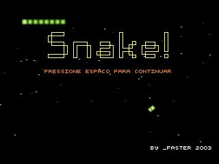
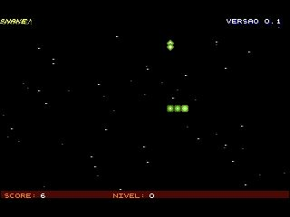

Original web port
The self-contained HTML/Canvas version. No build step or emulator is required.
An old 2003 assembly game with a browser recreation and a playable NES port.

The self-contained HTML/Canvas version. No build step or emulator is required.

Play the cc65 NES ROM in the browser with EmulatorJS using its Nestopia core.